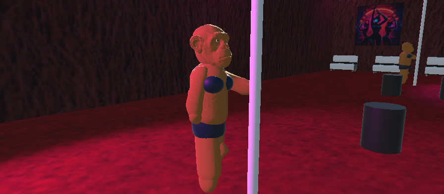
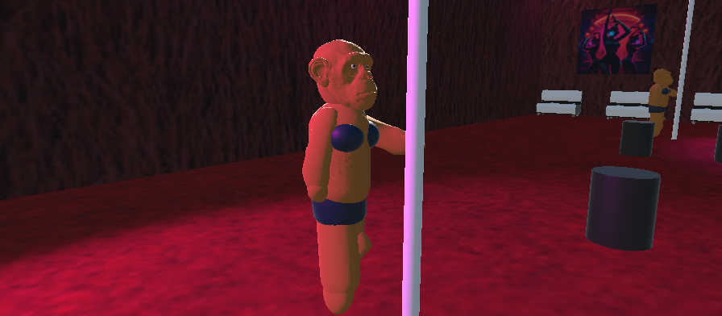

Benvenuto in Calabria Simulator
🐒
🐒
🐒
Scimmie. Banane. Peperoncino. Calabria.
🎮 Vai su itch.io 



🮠Cos’è Calabria Simulator
Videogioco open world satirico dove controlli una scimmia armata di una banana spara-peperoncino.
I nemici colpiti possono trasformarsi in una ’nduja vivente.
âš ï¸ Attento ai Calabriat: se ti avvicini troppo possono prenderti a botte.
🗺️ Mappa della Calabria
Esplora una Calabria surreale, ispirata a luoghi iconici, reinterpretati in chiave ironica e folle.
- 🏖️ Coste e spiagge selvagge
- 🏔️ Montagne e boschi pericolosi
- 🏛️ Rovine e zone antiche
- 🌶️ Zone ad altissimo livello di peperoncino
- 🥊 Aree controllate dai Calabriat
Ogni zona nasconde segreti, meme e pericoli.